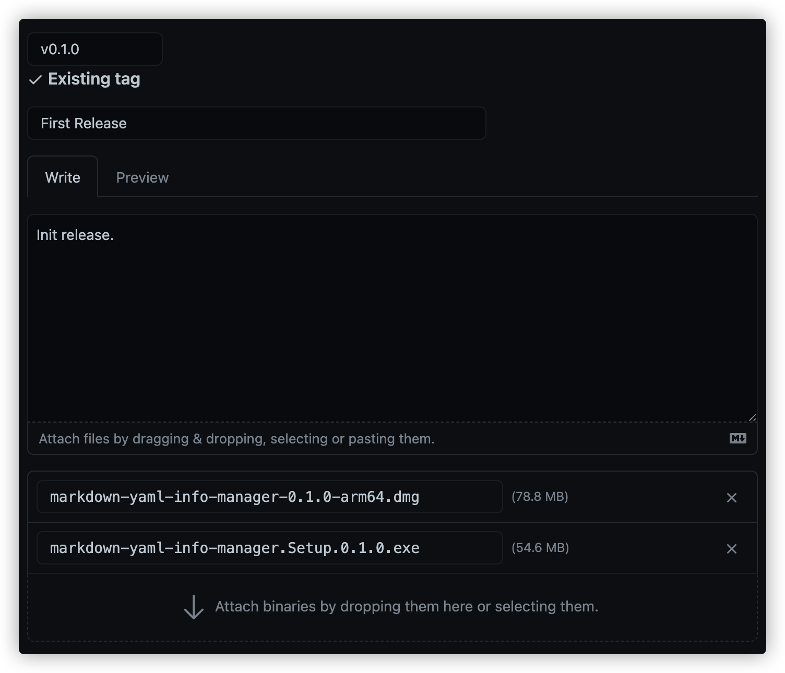

再次从零开始捣鼓一个Electron应用——监控、构建与发布
在连续捣鼓了这个应用好几天后，感觉大部分功能实现的差不多了，就打算发布一版看一下。这次打算将成品包直接放到github上，github提供了release功能。本次发布过程还只是手动的，后续考虑如何自动的构建成品并进行发布操作。不知道Github Action支不支持这个功能。
应用监控
发布之后如何快速获取到应用崩溃的信息？这个时候就需要一个监控来帮忙了。Sentry 是一个开源的实时错误追踪系统，提供了多种语言的错误上报接入和在线的错误分析平台，还有官方试用或者自建上报服务端的功能。
接入sentry也是非常简单，首先访问 https://sentry.io/ 注册并登陆，创建或使用默认的组织。
在项目中增加sentry客户端的依赖
1 | # Using yarn |
在 background.ts 和 main.ts 开始的位置增加启动监控的代码：
1 | import * as Sentry from "@sentry/electron"; |
需要注意的是不同项目的dsn是不同的，在官网的引导中会明确指出需要填写的dsn。而且官网的文档也有更详细的说明。
构建
执行项目默认的构建命令，就可以在 dist_electron 中生成对应操作系统的成品包：
1 | yarn run electron:build |
需要注意的是，在某个平台构建，只能生成对应平台的安装和运行包。比如在Windows平台下会生成.exe文件，在Mac平台下会生成.dmg镜像文件。如果要生成全部的三个平台就需要找齐对应平台的系统进行构建。
发布
在github仓库页面，可以新增Releases。

需要填写的内容：
- 选择需要发布的分支，版本号。填写的版本号会自动创建Tag。
- 填写发布标题。
- 填写发布说明。
- 上传构建的成品包。
保存后就成功发布了一个版本了。